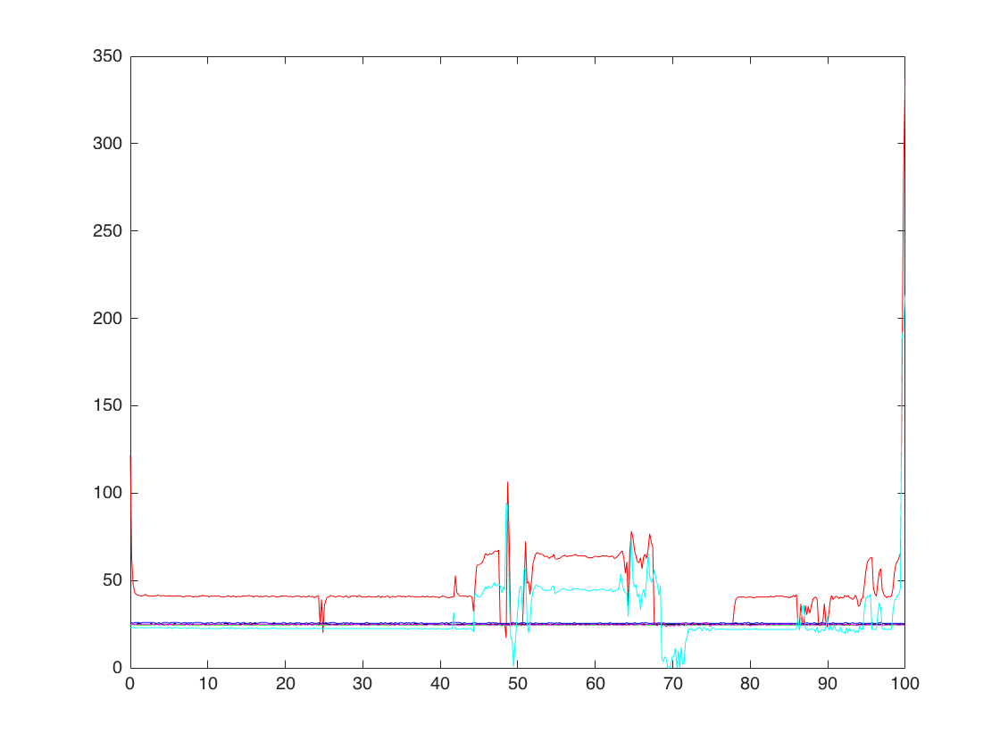

ENPH 257 Lab
Contents
Rod dimensions
d = 22.21; %mm l = 304.8; %mm
Arduino setup
sensor pin 0 (no 1) is at heated end sensor pin 1,2,3 (no 2,3,4) is between ends sensor pin 4 (no 5) is at free end sensor pin 5 (no 6) is ambient
powerTemp = 6; powerPin = 'D8'; pOn = 1; pOff = 0; maxTemp = 50; % C, when reached, power resistor turns off delayTime = 0.1; % Time delay between itterations of loop clear a; a = arduino();
Time setup
duration = 100; % seconds tic; times = toc; % start time
Start apparatus setup
if exist('offsets','var') == 0; offsets = sensorOffsets(a); end temps=readTemperatures(a); % initial temperature reading for initialization of array writeDigitalPin(a,powerPin,pOff); %turn power resistor on while toc < duration times = vertcat(times, toc); temps = vertcat(temps, readTemperatures(a)); % Turn resistor off at maxTemp if temps(end,powerTemp) > maxTemp writeDigitalPin(a,powerPin,pOff); end plot(times,temps(:,1),'r-'); hold on plot(times,temps(:,2),'b-'); plot(times,temps(:,3),'g-'); plot(times,temps(:,4),'k-'); plot(times,temps(:,5),'m-'); plot(times,temps(:,6),'c-'); hold off pause(delayTime); end writeDigitalPin(a,powerPin,pOff); %turn power resistor off, safety measure